微信公众号[深容Pubmed文献检索] 1. 此处右键：选菜单【翻成中文（简体）】 2. 翻译后，此处右键：选菜单【打印...】成PDF格式
建议屏幕分辨率：1920X1080；如果屏幕太小，可以按Ctrl + 或 Ctrl -缩放网页。

Software Construction
Chapter 6: Maintainability-Oriented Software
Construction Approaches
6.1 Metrics and Construction
Principles for Maintainability
Xu Hanchuan
xhc@hit.edu.cn
April 14, 2019

Outline
6.1 Metrics and Construction Principles for Maintainability
▪ Software Maintenance and Evolution
▪ Metrics of Maintainability
▪ Modular Design and Modularity Principles
▪ OO Design Principles: SOLID
▪ OO Design Principles: GRASP
▪ Summary


Software Construction
1 Software Maintenance and
Evolution
6.1 Metrics and Construction Principles for Maintainability
What is Software Maintenance?
▪ Software maintenance in software engineering is the modification of
a software product after delivery to correct faults, to improve
performance or other attributes. 在软件发布后，修改软件以修正错误
和提升性能
▪ In "ISO/IEC 14764:2006 Software Engineering— Software Life Cycle
Processes — Maintenance"
6.1 Metrics and Construction Principles for Maintainability
Operation & Maintenance Engineer
▪ Maintenance is one of the most difficult aspects of software
production because maintenance incorporates aspects of all other
phases 软件维护同软件开发的各阶段均相关
▪ A fault is reported from users and is to be handled by a
maintenance engineer.
▪ A maintenance engineer must have superb debugging skills
– The fault could lie anywhere within the product, and the original cause of
the fault might lie in the by now non-existent specifications or design
documents (bug/issue localization). 确定错误位置
– Superb diagnostic skills, testing skills and documentation skills are
required (testing, fix, and documenting changes). 测试、修正和文档
6.1 Metrics and Construction Principles for Maintainability
After fixing the code
▪ More Steps:
– Test that the modification works correctly: use specially constructed test
cases
– Check for regression faults(回归性错误): use stored test data, and add
specially constructed test cases to stored test data for future regression
testing
– Document all changes
▪ How to minimize regression faults
– Consult the detailed documentation and make use of constructed test cases.
▪ What usually happens: no enough documentation / test cases;
▪ The operation engineer has to deduce from the source code itself all
the information needed to avoid introducing a regression fault. 没有
足够文档情况下，需要维护人员从源代码中分析信息，以避免引入回归
性粗欧文

6.1 Metrics and Construction Principles for Maintainability
Types of software maintenance
▪ Corrective maintenance
25% 纠正性维护
– Reactive modification of a software product
performed after delivery to correct discovered
problems;
▪ Adaptive maintenance
21% 适应性维护
– Modification of a software product performed after
delivery to keep a software product usable in a
changed or changing environment;
▪ Perfective maintenance
50% 完善性维护
– Enhancement of a software product after delivery to
improve performance or maintainability;
▪ Preventive maintenance
4% 预防性维护
– Modification of a software product after delivery to
detect and correct latent faults in the software product
before they become effective faults.

6.1 Metrics and Construction Principles for Maintainability
Software Evolution
▪ Software evolution is a term used in software maintenance,
referring to the process of developing software initially, then
repeatedly updating it for various reasons.
▪ Over 90% of the costs of a typical system arise in the maintenance
phase, and that any successful piece of software will inevitably be
maintained.
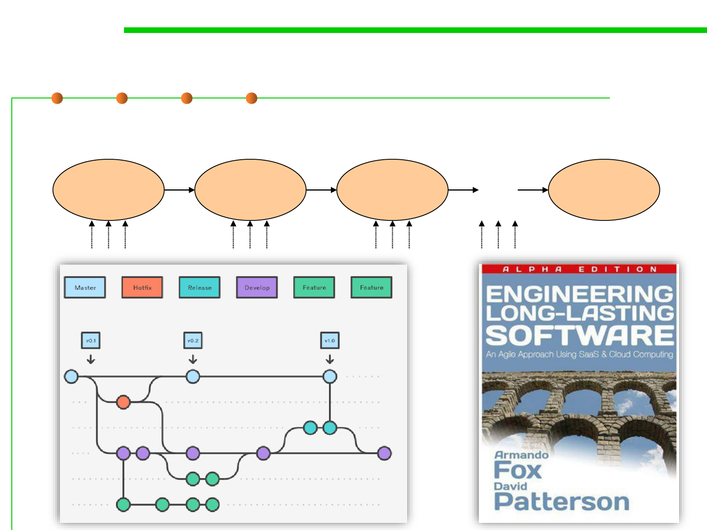
6.1 Metrics and Construction Principles for Maintainability
Software Evolution
▪ Multiple versions in the life of a software: From 1 to n
Initial
Version
Updated
Version 1
Updated
Version 2
…
Discarded
Version
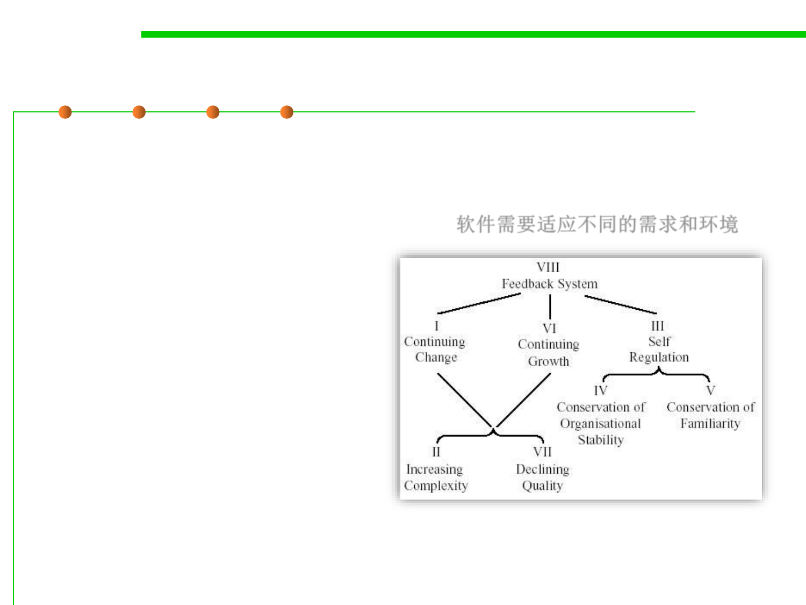
6.1 Metrics and Construction Principles for Maintainability
Lehman’s Laws on Software Evolution
▪ An E-program is written to perform some real-world activity; how
it should behave is strongly linked to the environment in which it
runs, and such a program needs to adapt to varying requirements
and circumstances in that environment 软件需要适应不同的需求和环境
▪ Eight laws were formulated：
– Feedback System
– Continuing Change
– Continuing Growth
– Declining Quality
– Increasing Complexity
– Self Regulation
• Conservation of Organizational Stability
• Conservation of Familiarity
6.1 Metrics and Construction Principles for Maintainability
Software Entropy熵
▪ As a system is modified, its disorder, or entropy, tends to increase.
▪ This is known as software entropy.
（entropy熵：物理意义是系统混乱程度的度量）
6.1 Metrics and Construction Principles for Maintainability
Life patterns of software
Vitality活力
0
Time
6.1 Metrics and Construction Principles for Maintainability
Objective of software maintenance and evolution
▪ Objective of software maintenance and evolution: To improve the
fitness / adaptability of software, and keep its vitality, i.e., “long-
lasting software (low entropy software)”
▪ An example of Linux Kernel’s evolution: its Maintainability Index.
A high value means better maintainability


6.1 Metrics and Construction Principles for Maintainability
Maintenance is not just the task of op engineers…
▪ Maintenance is not just the task of maintenance and operation
engineers, but also a potential task of software designers and
developers. 维护不仅是维护人员的责任，也是设计和开发者的责任
▪ For them, it is mandatory to consider future potential
changes/extensions of the software during the design and
construction phases. 设计和开发者需要考虑软件未来的变化和扩展
▪ So that flexible and extensible design/constructions are
comprehensively considered, in other words, “easy to change /
extension”.
▪ This is what’s called “maintainability”, “extensibility” and
“flexibility” of software construction.
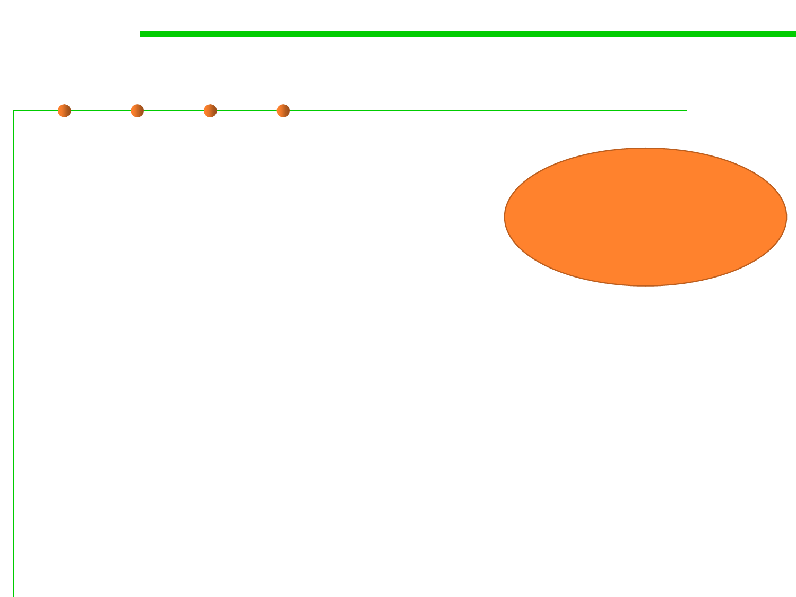
6.1 Metrics and Construction Principles for Maintainability
Examples of maintainability-oriented construction
▪ Modular design and implementation
– Low coupling and high cohesion
▪ OO design principles
– SOLID
– GRASP
These are what
to be studied in
this Chapter
▪ OO design patterns
– Factory method pattern, Builder pattern
– Bridge pattern, Proxy pattern
– Memento pattern, State pattern
▪ State-based construction (Automata-based programming)
▪ Table-driven construction
▪ Grammar-based construction

Software Construction
2 Metrics of Maintainability
6.1 Metrics and Construction Principles for Maintainability
Many names of maintainability
Ready for Change
Ready for Extension
▪ Maintainability—“The ease with which a software system or
component can be modified to correct faults, improve performance,
or other attributes, or adapt to a changed environment”. 易于纠正错
误和提升性能
▪ Extensibility — Software design/implementation takes future
growth into consideration and is seen as a systemic measure of the
ability to extend a system and the level of effort required to
implement the extension. 易于增加功能
▪ Flexibility —The ability of software to change easily in response to
user requirements, external technical and social environments, etc. 易
于改变
▪ Adaptability — The ability of an interactive system (adaptive
system) that can adapt its behavior to individual users based on
information acquired about its user(s) and its environment. 适应用户
个性化需求

6.1 Metrics and Construction Principles for Maintainability
Many names of maintainability
▪ Manageability—How efficiently and easily a software system can
be monitored and maintained to keep the system performing,
secure, and running smoothly.
▪ Supportability—How effectively a software can be kept running
after deployment, based on resources that include quality
documentation, diagnostic information, and knowledgeable and
available technical staff. 发布后，软件受支持的程度
6.1 Metrics and Construction Principles for Maintainability
Questions about maintainability
▪ Structural and design simplicity: how easy is it to change things?
▪ Are things tightly or loosely coupled (i.e., separation of concerns)?
▪ Are all elements in a package/module cohesive and their
responsibilities clear and closely related?
▪ Does it have overly deep inheritance hierarchies or does it favor
composition over inheritance?
▪ How many independent paths of execution are there in the method
definitions (i.e., cyclomatic complexity)?
▪ How much code duplication exists?
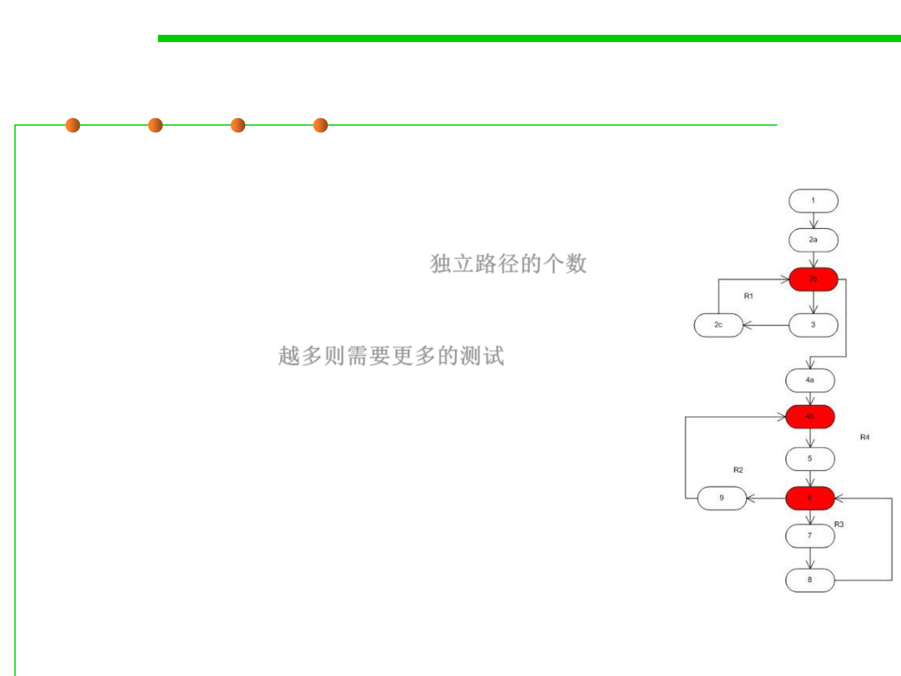
6.1 Metrics and Construction Principles for Maintainability
Some common-used maintainability metrics
▪ Cyclomatic Complexity - Measures the structural
complexity of the code.
– It is created by calculating the number of different code
paths in the flow of the program. 独立路径的个数
– A program that has complex control flow will require
more tests to achieve good code coverage and will be
less maintainable. 越多则需要更多的测试
– CC = E-N+2, CC=P+1, CC=number of areas
▪ Lines of Code - Indicates the approximate number of
lines in the code.
– A very high count might indicate that a type or method
is trying to do too much work and should be split up.
– It might also indicate that the type or method might be
hard to maintain.

6.1 Metrics and Construction Principles for Maintainability
Some common-used maintainability metrics
▪ Halstead Volume: a composite metric based on the number of
(distinct) operators and operands in source code. 运算符和操作数的数目
▪ Maintainability Index (MI) - Calculates an index value between 0
and 100 that represents the relative ease of maintaining the code. A
high value means better maintainability. It is calculated based on:
– Halstead Volume (HV)
– Cyclomatic Complexity (CC)
– The average number of lines of code per module (LOC)
– The percentage of comment lines per module (COM).

6.1 Metrics and Construction Principles for Maintainability
Some common-used maintainability metrics
▪ Depth of Inheritance - Indicates the number of class definitions that
extend to the root of the class hierarchy. The deeper the hierarchy
the more difficult it might be to understand where particular
methods and fields are defined or/and redefined.
▪ Class Coupling - Measures the coupling to unique classes through
parameters, local variables, return types, method calls, generic or
template instantiations, base classes, interface implementations,
fields defined on external types, and attribute decoration.
– Good software design dictates that types and methods should have high
cohesion and low coupling.
– High coupling indicates a design that is difficult to reuse and maintain
because of its many interdependencies on other types.
▪ Unit test coverage - indicates what part of the code base is covered
by automated unit tests. (to be studied in Chapter 7)
6.1 Metrics and Construction Principles for Maintainability
Many other maintainability metrics
Be discussed in Ch.9
6.1 Metrics and Construction Principles for Maintainability
Avg. CC per function in Linux Kernel
Cyclomatic Complexity
the reduced average value is just a result of
having more functions with relatively
lower complexity.
6.1 Metrics and Construction Principles for Maintainability
Maintainability index (MI) of Linux Kernel

Software Construction
3 Modular Design and Modularity
Principles
6.1 Metrics and Construction Principles for Maintainability
Modular programming
▪ Modular programming is a software design technique that
emphasizes separating the functionality of a program into
independent, interchangeable modules, such that each contains
everything necessary to execute only one aspect of the desired
functionality. 将程序的功能分散到独立可交互的模块中
▪ It usually refers to high-level decomposition of the code of an
entire program into pieces, and has been widely adopted in both
Structured Programming and OOP. 模块化是高层的功能分解技术
– Structured programming refers to the low-level code use of structured
control flow; 在结构化编程中是如何根据控制流分解代码
– Object-oriented programming refers to the data use of objects, a kind of
data structure. 在OOP中是指对象中数据的使用方式

6.1 Metrics and Construction Principles for Maintainability
Modular programming
▪ The goal of design is to partition the system into modules and
assign responsibility among the components in a way that:
– High cohesion within modules
– Loose coupling between modules
▪ Modularity reduces the total complexity a programmer has to deal
with at any one time assuming:
– Functions are assigned to modules in away that groups similar functions
together (Separation of concerns)
– There are small, simple, well-defined interfaces between modules
(Information hiding)
▪ The principles of cohesion and coupling are probably the most
important design principles for evaluating the maintainability of a
design.

Software Construction
(1) Five Criteria for Evaluating
Modularity
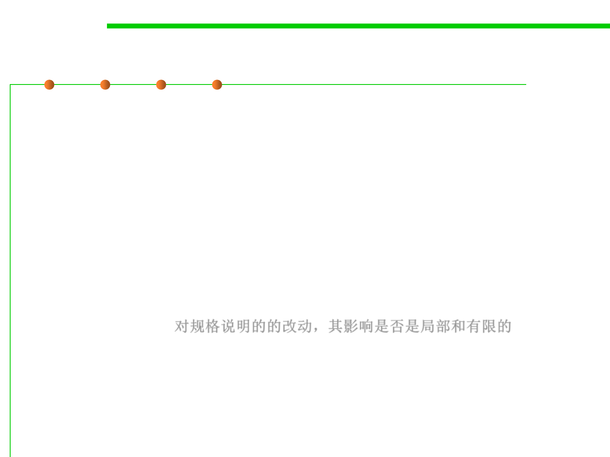
6.1 Metrics and Construction Principles for Maintainability
Five Criteria for Evaluating Modularity
▪ Decomposability (可分解性)
– Are larger components decomposed into smaller components?
▪ Composability (可组合性)
– Are larger components composed from smaller components?
▪ Understandability (可理解性)
– Are components separately understandable?
▪ Continuity (可持续性)
– Do small changes to the specification affect a localized and limited number
of components? 对规格说明的的改动，其影响是否是局部和有限的
▪ Protection (保护性)
– Are the effects of run-time abnormalities confined to a small number of
related components?
6.1 Metrics and Construction Principles for Maintainability
1. Decomposability
▪ Decompose problem into smaller sub-problems that can be solved
separately (将问题分解为各个可独立解决的子问题)
– Goal: keep dependencies explicit and minimal (目标：使模块之间的依赖关
系显式化和最小化)
– Example: top-down structural design

6.1 Metrics and Construction Principles for Maintainability
Top-down functional design
Topmost functional abstraction
A
Sequence
B
D
C
Loop
C1
I
Conditional
I1
C2
I2
2. Composability
6.1 Metrics and Construction Principles for Maintainability
▪ Freely combine modules to produce new systems (可容易的将模块
组合起来形成新的系统)
– Goal: make modules reused in different environments (目标：使模块可在
不同的环境下复用)
– Example: Math libraries; UNIX command & pipes
6.1 Metrics and Construction Principles for Maintainability
3. Understandability
▪ Individual modules understandable by human reader (每个子模块
都可被系统设计者容易的理解)
– Example: Unix shell such as Program1 | Program2 | Program3
– Counter-example: Sequential Dependencies (A →B → C)
4. Continuity
6.1 Metrics and Construction Principles for Maintainability
▪ Small change in specification results in:
– changes in only a few modules and does not affect the architecture (规格说
明小的变化将只影响一小部分模块，而不会影响整个体系结构)
– Example: Symbolic Constants (符号型变量)
• const String PRODUCT_CODE = “PBS001291A”
– Example: Principle of Uniform Access(It states "All services offered by a
module should be available through a uniform notation, which does not
betray whether they are implemented through storage or through
computation)模块提供的所有服务应该通过统一标识提供
5. Protection
6.1 Metrics and Construction Principles for Maintainability
▪ Effects of an abnormal run-time condition is confined to a few
modules (运行时的不正常将局限于小范围模块内)
– Example: Validating input at source

Software Construction
(2) Five Rules of Modularity Design

6.1 Metrics and Construction Principles for Maintainability
Five Rules of Modularity Design
▪ Direct Mapping (直接映射)
▪ Few Interfaces (尽可能少的接口)
▪ Small Interfaces (尽可能小的接口)
▪ Explicit Interfaces (显式接口)
▪ Information Hiding (信息隐藏)

6.1 Metrics and Construction Principles for Maintainability
1. Direct Mapping
▪ Direct mapping: keep the structure of the solution compatible with
the structure of the modeled problem domain (直接映射：模块的结
构与现实世界中问题领域的结构保持一致)
▪ Impact on (对以下评价标准产生影响):
– Continuity (持续性)
• easier to assess and limit the impact of change
– Decomposability (可分解性)
• decomposition in the problem domain model as a good starting point for the
decomposition of the software

2. Few Interfaces
6.1 Metrics and Construction Principles for Maintainability
▪ Every module should communicate with as few others as possible (
模块应尽可能少的与其他模块通讯)
– 通讯路径的数目: n-1, n(n-1)/ 2, n-1
– affects Continuity, Protection, Understandability and Composability (对以
下评价标准产生影响：可持续性、保护性、可理解性、可组合性)
6.1 Metrics and Construction Principles for Maintainability
3. Small Interfaces
▪ If two modules communicate, they should exchange as little
information as possible (如果两个模块通讯，那么它们应交换尽可能
少的信息)
– limited “bandwidth” of communication (限制模块之间通讯的“带宽”)
– Continuity and Protection (对“可持续性”和“保护性”产生影响)
x, y
z
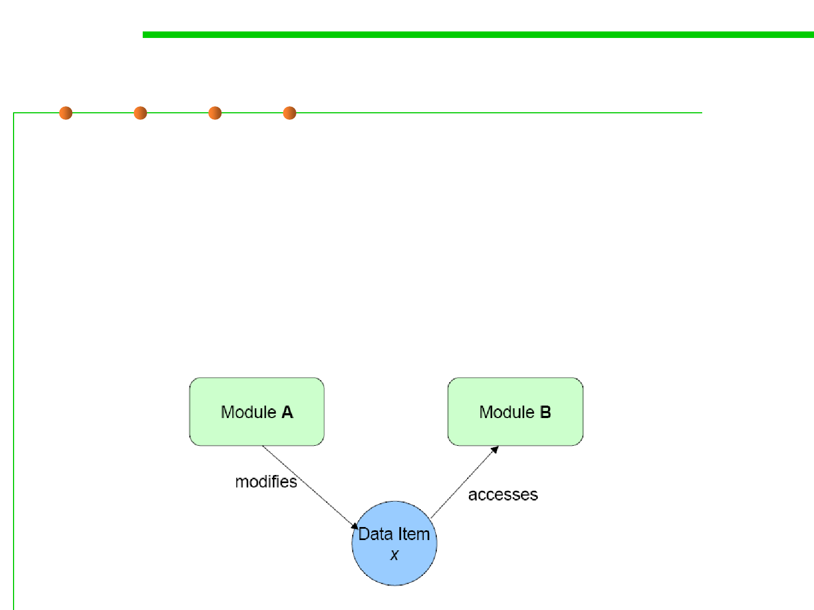
6.1 Metrics and Construction Principles for Maintainability
4. Explicit Interface
▪ Whenever two modules A and B communicate, this must be
obvious from the text of A or B or both (当A与B通讯时，应明显的发
生在A与B的接口之间)
– Decomposability, Composability, Continuity, Understandability (受影响的评价标准
：可分解性、可组合性、可持续性、 可理解性)
反例：

6.1 Metrics and Construction Principles for Maintainability
…再次强调Rule 2-3-4
▪ (2) Few Interfaces: “Don’t talk to many!”
尽可能少的接口：”不要对太多人讲话…”
▪ (3) Small Interfaces: “Don’t talk a lot!”
尽可能小的接口： ”不要讲太多…”
▪ (4) Explicit Interfaces: “Talk loud and in public! Don’t whisper!”
显式接口： ”公开的大声讲话…不要私下嘀咕…”
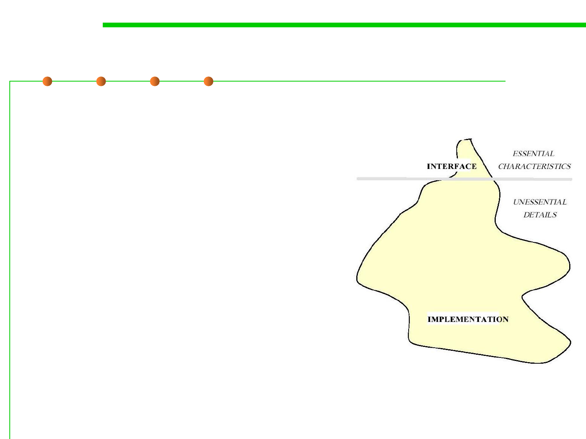
6.1 Metrics and Construction Principles for Maintainability
5. Information Hiding
▪ Motivation: design decisions that are subject to change should be
hidden behind abstract interfaces (经常可能发生变化的设计决策应
尽可能隐藏在抽象接口后面)
– Impact on Continuity
较少发生变化的部分
(影响“可持续性”)
需要经常发生变化的部分
▪ The designer of every module must
select a subset of the module’s
properties as the official information
about the module, to be made
available to client modules.
 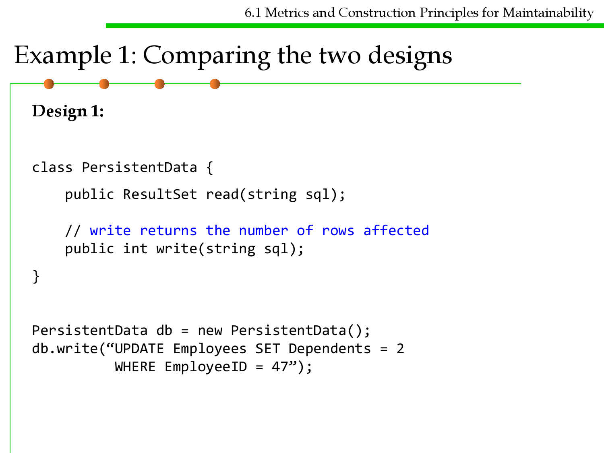
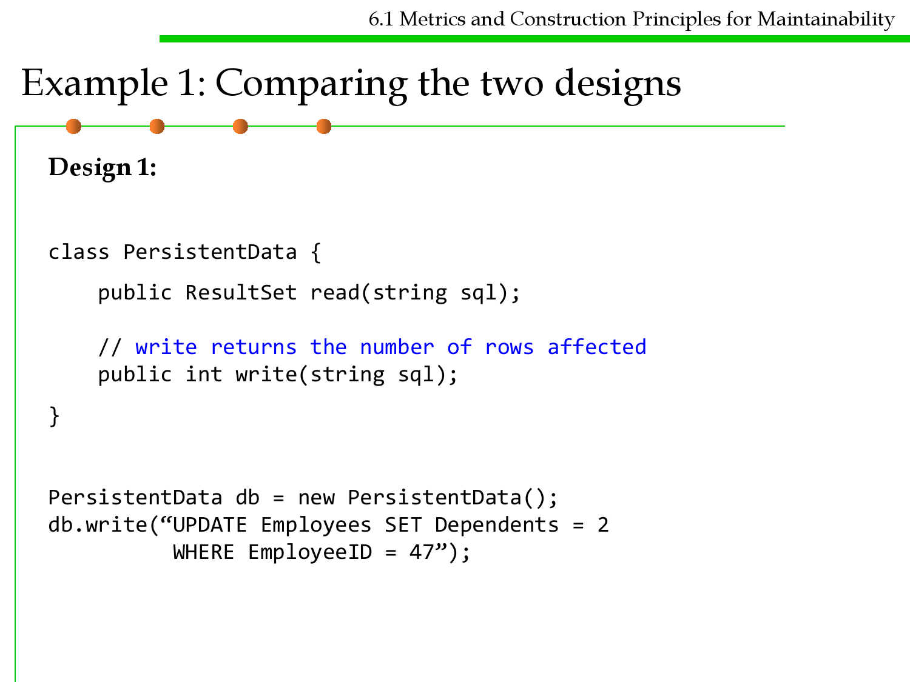
6.1 Metrics and Construction Principles for Maintainability
Example 1: Comparing the two designs
Design 1:
class PersistentData {
public ResultSet read(string sql);
// write returns the number of rows affected
public int write(string sql);
}
PersistentData db = new PersistentData();
db.write(“UPDATE Employees SET Dependents = 2
WHERE EmployeeID = 47”);

Example 1
6.1 Metrics and Construction Principles for Maintainability
Design 2:
class EmployeeGateway {
public static EmployeeGateway find(int ID);
public void setName(string name);
public string getName();
public void setDependents(int dependents);
public int getDependents();
public int insert();
public void update();
public void delete();
}
EmployeeGateway e = EmployeeGateway.find(47);
e.setDependents(2);
e.update();

Example 2
6.1 Metrics and Construction Principles for Maintainability
class Course {
private Set students;
public Set getStudents() {
return students;
}
public void setStudents(Set s) {students = s;}
}
--------------------------------------------------------------------------
class Course {
private Set students;
public Set getStudents() {
return Collections.unmodifiableSet(students);
}
public void addStudent(Student student) {
students.add(student);
}
public void removeStudent(Student student) {
students.remove(student);
}
}

Software Construction
(3) Coupling and Cohesion
Coupling
6.1 Metrics and Construction Principles for Maintainability
▪ Coupling is the measure of dependency between modules. A
dependency exists between two modules if a change in one could
require a change in the other.
▪ The degree of coupling between modules is determined by:
– The number of interfaces between modules (quantity), and 接口数量
– Complexity of each interface (determined by the type of communication)
(quality) 接口复杂度，通讯的复杂度

6.1 Metrics and Construction Principles for Maintainability
Example: coupling between CSS and JavaScript
▪ A well-designed web app modularizes around:
– HTML files which specify data and semantics
– CSS rules which specify the look and formatting of HTML data
– JavaScript which defines behavior/interactivity of page
▪ Assume you have the following HTML and CSS definitions.

6.1 Metrics and Construction Principles for Maintainability
Example: coupling between CSS and JavaScript
▪ HTML:
<!doctype html>
<html>
<head>
<script type="text/javascript" src="base.js"></script>
<link rel="stylesheet" href="default.css">
</head>
<body>
<button onclick="highlight2()">Highlight</button>
<button onclick="normal2()">Normal</button>
<h1 id="title" class="NormalClass">CSS <--> JavaScript Coupling</h1>
</body>
</html>
▪ CSS:
.NormalClass {
color:inherit;
font-style:normal;
}
coupling-example.html
default.css
▪ Output:
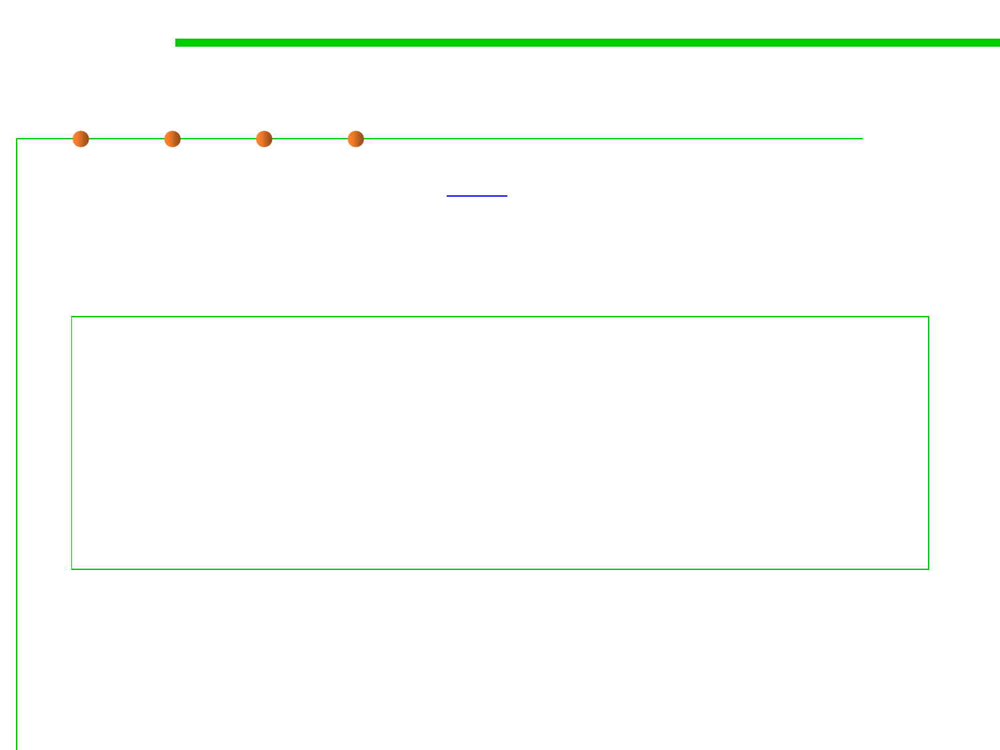
Option A
6.1 Metrics and Construction Principles for Maintainability
▪ JavaScript code modifies the style attribute of HTML element.
function highlight() {
document.getElementById("title").style.color="red";
document.getElementById("title").style.fontStyle="italic";
}
function normal() {
document.getElementById("title").style.color="inherit";
document.getElementById("title").style.fontStyle="normal";
}
base.js

Option B
6.1 Metrics and Construction Principles for Maintainability
▪ JavaScript code modifies the class attribute of HTML element.
function highlight() {
document.getElementById("title").className = "HighlightClass";
}
function normal() {
document.getElementById("title").className = "NormalClass";
}
base.js
.NormalClass {
color:inherit;
font-style:normal;
}
.HighlightClass {
color:red;
font-style:italic;
}
default.css

Cohesion
6.1 Metrics and Construction Principles for Maintainability
▪ Cohesion is a measure of how strongly related the functions or
responsibilities of a module are.
▪ A module has high cohesion if all of its elements are working
towards the same goal.
6.1 Metrics and Construction Principles for Maintainability
Cohesion and Coupling
▪ The best designs have high cohesion (also called strong cohesion)
within a module and low coupling (also called weak coupling)
between modules.
6.1 Metrics and Construction Principles for Maintainability
Coupling and Cohesion are with trade-off
▪ When Coupling is high, cohesion tends to be low and vise versa.

Software Construction
4 OO Design Principles: SOLID

SOLID
6.1 Metrics and Construction Principles for Maintainability
▪ (SRP) The Single Responsibility Principle
▪ (OCP) The Open-Closed Principle
▪ (LSP) The Liskov Substitution Principle
▪ (ISP) The Interface Segregation Principle
▪ (DIP) The Dependency Inversion Principle
单一责任原则
开放封闭原则
Liskov替换原则
接口隔离原则
依赖转置原则
▪ SOLID
▪ 参考资料《敏捷软件开发:原则、模式与实践》， Robert C. Martin，
人民邮电出版社

Software Construction
(1) Single responsibility principle
(SRP)
6.1 Metrics and Construction Principles for Maintainability
Single Responsibility Principle
▪ “There should never be more than one reason for a class to
change”, i.e., a class should concentrate on doing one thing and
one thing only. 引起类变化的原因只有一个，专心做一件事
Just because you can, doesn’t mean you should
SRP的一个反例
6.1 Metrics and Construction Principles for Maintainability
Rectangle类既包含GUI的绘图功能draw()--
在GUI上显示矩形，
又包括几何计算功能area()--计算面积。
该设计违反了SRP。
问题1：计算应用ComputeApp会包含同其无关的GUI代码，如：C++会把GUI
代码链接进来，Java则要求GUI的Class文件必须被部署到目标平台上。
问题2：如果GraphicalApp的改变导致Rectangle需要变化，则ComputerApp
也需要重新构建、测试和部署。

SRP的一个反例
6.1 Metrics and Construction Principles for Maintainability
通过分解，将两个无关
的责任分离开来，
分别放置在两个类中：
• Geometric Rectangle类
负责计算面积，
• Rectangle类负责在GUI
上绘图。
+ draw( )
6.1 Metrics and Construction Principles for Maintainability
Single Responsibility Principle
▪ Two resposibilities
interface Modem {
public void dial(String pno);
public void hangup();
public void send(char c);
public char recv();
}
▪ Connection Management + Data Communication

6.1 Metrics and Construction Principles for Maintainability
Single Responsibility Principle
interface DataChannel {
public void send(char c);
public char recv();
}
interface Connection {
public void dial(String phn);
public char hangup();
}

Software Construction
(2) Open/closed principle (OCP)

6.1 Metrics and Construction Principles for Maintainability
Open Closed Principle
▪ “Software entities (classes, modules, functions, etc.) should be
open for extension, but closed for modification“, i.e., change a
class‘ behavior using inheritance and composition 对扩展是开放的
，对修改是封闭的，应通过继承和组合改变/扩展功能
▪ Modules should be open and closed.
▪ Definitions:
– Open module: May be extended.
– Closed module: Usable by clients. May be approved, baselined and (if
program unit) compiled.
▪ The rationales are complementary:
– For closing a module (manager’s perspective): Clients need it now.
– For keeping modules open (developer’s perspective): One frequently
overlooks aspects of the problem.

6.1 Metrics and Construction Principles for Maintainability
Open Closed Principle
// Open-Close Principle - Bad example
class GraphicEditor {
class Shape {
int mType;
}
public void drawShape(Shape s) {
if (s.mType==1)
drawRectangle(s);
else if (s.mType==2)
drawCircle(s);
}
public void drawCircle(Circle r)
{....}
public void drawRectangle(Rectangle r)
{....}
}
class Rectangle extends Shape {
Rectangle() {
super.mType=1;
}
}
class Circle extends Shape {
Circle() {
super.mType=2;
}
}

6.1 Metrics and Construction Principles for Maintainability
Open Closed Principle – a Few Problems….
▪ Impossible to add a new Shape without modifying GraphEditor
▪ Important to understand GraphEditor to add a new Shape
▪ Tight coupling between GraphEditor and Shape
▪ Difficult to test a specific Shape without involving GraphEditor
▪ If-Else-/Case should be avoided

6.1 Metrics and Construction Principles for Maintainability
Open Closed Principle - Improved
// Open-Close Principle - Good example
class GraphicEditor {
public void drawShape(Shape s) {
s.draw();
}
}
class Shape {
abstract void draw();
}
class Rectangle extends Shape {
public void draw() {
// draw the rectangle
}
}
Single Choice
6.1 Metrics and Construction Principles for Maintainability
▪ Whenever a software system must support a set of alternatives, one
and only one module in the system should know their exhaustive
list. 当软件系统必须支持一组替代方案时，系统中应该有且只有一个
模块知道方案的详尽列表。
▪ Editor: set of commands (insert, delete etc.)
▪ Graphics system: set of figure types (rectangle, circle etc.)
▪ Compiler: set of language constructs (instruction, loop, expression
etc.)

Software Construction
(3) Liskov substitution principle
(LSP)
6.1 Metrics and Construction Principles for Maintainability
Liskov Substitution Principle
▪ “Functions that use pointers or references to base classes must be
able to use objects of derived classes without knowing it“, i.e.,
subclasses should behave nicely when used in place of their base
class(关注的是“操作”的可替换性)
▪ LSP: Subtypes must be substitutable for their base types. (子类型必
须能够替换其基类型)

6.1 Metrics and Construction Principles for Maintainability
Liskov Substitution Principle
// Violation of LSP
class Rectangle {
int m_width;
int m_height;
public void setWidth(int width){
m_width = width;
}
public void setHeight(int h){
m_height = h;
}
public int getWidth(){
return m_width;
}
public int getHeight(){
return m_height;
}
public int getArea(){
return m_width * m_height;
}
}
class Square extends Rectangle {
public void setWidth(int width){
m_width = width;
m_height = width;
}
public void setHeight(int height){
m_width = height;
m_height = height;
}
}

6.1 Metrics and Construction Principles for Maintainability
Liskov Substitution Principle
class LspTest{
private static Rectangle getNewRectangle(){
// it can be an object returned by some factory ...
return new Square();
}
public static void main (String args[]){
Rectangle r = LspTest.getNewRectangle();
r.setWidth(5);
r.setHeight(10);
//user knows that r it's a rectangle. It assumes that he's able to set
the width and height as for the base class
}
}
System.out.println(r.getArea());
// now he's surprised to see that the area is 100 instead of 50.

Software Construction
(4) Interface segregation principle
(ISP)
6.1 Metrics and Construction Principles for Maintainability
Interface Segregation Principle
▪ “Clients should not be forced to depend upon interfaces that they
do not use“, i.e., keep interfaces small. “客户不应该被迫依赖他们
不使用的接口”，即保持小接口。
▪ Don’t force classes to implement methods they can’t (Swing/Java)
▪ Don’t pollute interfaces with a lot of methods
▪ Avoid ’fat’ interfaces

6.1 Metrics and Construction Principles for Maintainability
Interface Segregation Principle
//bad example (polluted interface)
interface Worker {
void work();
void eat();
}
ManWorker implements Worker {
void work() {…};
void eat() {30 min break;};
}
RobotWorker implements Worker {
void work() {…};
void eat() {//Not Appliciable
for a RobotWorker};
}

6.1 Metrics and Construction Principles for Maintainability
Interface Segregation Principle
▪ Solution: split into two interfaces
interface Workable {
public void work();
}
interface Feedable{
public void eat();
}

Software Construction
(5) Dependency inversion principle
(DIP)
6.1 Metrics and Construction Principles for Maintainability
Dependency Inversion Principle
▪ A. High level modules should not depend upon low level modules.
Both should depend upon abstractions.高层模块不应该依赖于低层
模块,二者都应该依赖于抽象。
▪ B. Abstractions should not depend upon details. Details should
depend upon abstractions“, i.e., use lots of interfaces and
abstractions. 抽象不应该依赖于实现细节,实现细节应该依赖于抽象。
Policy Layer
<<interface>>
Policy Service
Interface
Policy Layer
Mechanism Layer
Mechanism Layer
<<interface>>
Mechanism Service
Interface
Utility Layer
Utility Layer
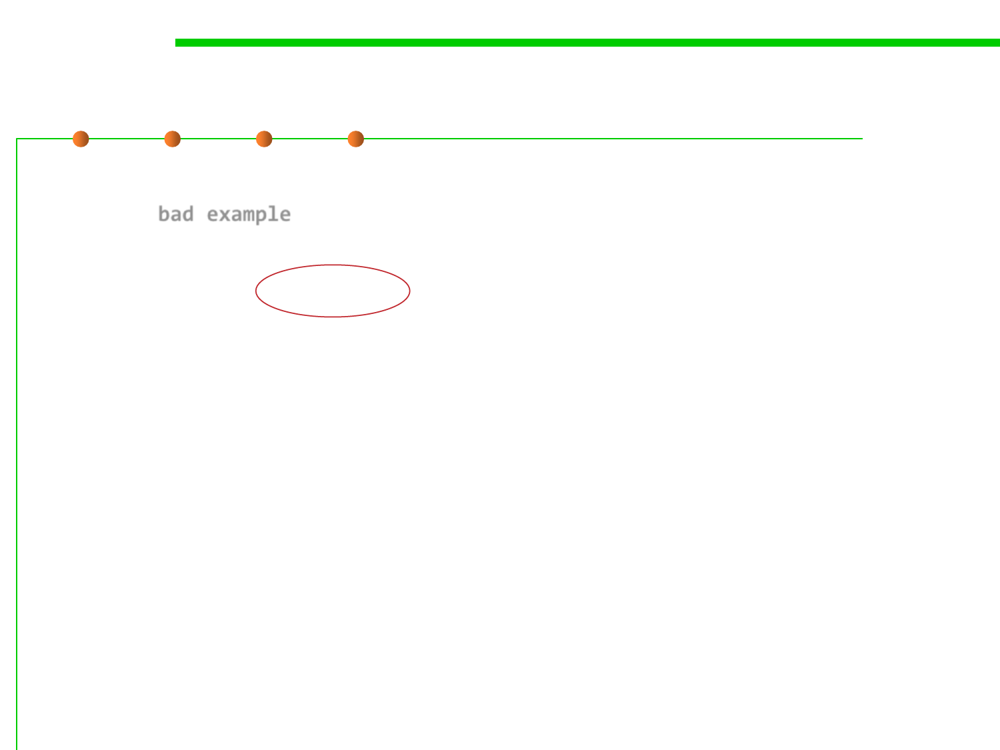
6.1 Metrics and Construction Principles for Maintainability
Dependency Inversion Principle
//DIP - bad example
public class EmployeeService {
private EmployeeFinder emFinder //concrete class, not abstract.
//Can access a SQL DB for instance
public Employee findEmployee(…) {
emFinder.findEmployee(…)
}
}
6.1 Metrics and Construction Principles for Maintainability
Dependency Inversion Principle
//DIP - fixed
public class EmployeeService {
private IEmployeeFinder emFinder
//depends on an abstraction, no an implementation
public Employee findEmployee(…) {
emFinder.findEmployee(…)
}
}
▪ Now its possible to change the finder to be a XmlEmployeeFinder,
DBEmployeeFinder, FlatFileEmployeeFinder,
MockEmployeeFinder….

6.1 Metrics and Construction Principles for Maintainability
Dependency Inversion Principle
BMW
BMW
driver
driver
car
Benz
Benz
想开QQ怎么办?
Audi
Audi

Why DIP?
6.1 Metrics and Construction Principles for Maintainability
▪ Advantages:
– Formalize class contracts. 类的契约形式化
– You can define the services of a routine in terms of pre- and post-
conditions. This makes it very clear what to expect. 通过前置和后置条件，
清晰定义子程序的功能
▪ Try Design for Testing
– Create a test-friendly design 形成测试友好的设计
– A test-friendly module is likely to exhibit other important design
characteristics.
– Example: you would avoid circular dependencies. Business logic will be
better isolated from UI code if you have to test it separately from the UI

6.1 Metrics and Construction Principles for Maintainability
小结：OO设计的两大武器
▪ 抽象(abstraction)：模块之间通过抽象隔离开来，将稳定部分和容易
变化部分分开
– LSP：对外界看来，父类和子类是“一样”的；
– DIP：对接口编程，而不是对实现编程，通过抽象接口隔离变化；
– OCP：当需要变化时，通过扩展隐藏在接口之后的子类加以完成，而不要修
改接口本身。
▪ 分离(Separation)： Keep It Simple, Stupid (KISS)
– SRP：按责任将大类拆分为多个小类，每个类完成单一职责，规避变化，提
高复用度；
– ISP：将接口拆分为多个小接口，规避不必要的耦合。
▪ 归纳起来：让类保持责任单一、接口稳定。

Software Construction
5 OO Design Principles: GRASP
6.1 Metrics and Construction Principles for Maintainability
What’s GRASP patterns
▪ General Responsibility Assignment Software Patterns (principles),
abbreviated GRASP, consist of guidelines for assigning
responsibility to classes and objects in OOP. 通用责任分配软件模式
（原则）
▪ The GRASP patterns are a learning aid to help one understand
essential object design, and apply design reasoning in a
methodical, rational, explainable way.
▪ This approach to understanding and using design principles is
based on patterns of assigning responsibilities to classes.
《Applying UML and Patterns》

6.1 Metrics and Construction Principles for Maintainability
What’s responsibility
▪ Responsibility of an object: related to the obligations of an object
对象的责任：对象的义务
▪ Two kinds of responsibility of an object
▪ Knowing: 掌握
– Knowing about private encapsulated data
– Knowing about related objects
– Knowing about things it can derive or calculate
▪ Doing: 操作
– Doing something itself, such as creating an object or doing a calculation
– Initiating action in other objects
– Controlling and coordinating activities in other objects.

6.1 Metrics and Construction Principles for Maintainability
Responsibilities and methods
▪ UML Sequence Diagram
:Sale
makePayment
create
:Payment
Responsibilities are implemented using methods:
makePayment implies Sale object has a responsibility to create
a Payment object

6.1 Metrics and Construction Principles for Maintainability
Responsibilities and Interaction Diagrams
▪ Interaction diagrams( includes Sequence Diagram and
Collaboration Diagram) show choices in assigning responsibilities
to objects.
▪ GRASP patterns guide choices in where to assign responsibilities.
▪ GRASP patterns are a codification of widely used basic principles.

6.1 Metrics and Construction Principles for Maintainability
What is GRASP composed of?
▪ Controller
▪ Information expert
▪ Creator
▪ Low coupling
▪ High cohesion
▪ Indirection
▪ Polymorphism
▪ Protected variations
▪ Pure fabrication

(1) Controller
6.1 Metrics and Construction Principles for Maintainability
▪ Problem :
– Who should be responsible for handling an input system event? 谁负责处
理系统输入事件？
▪ Solution：
– Assign the responsibility for receiving or handling a system event
message to a class representing one of the following choices:
• 1. Represent the overall system, device or subsystem (Façade controller外观控制
器)
• 2. Represent a use case scenario within which the system events occur. Often
named <UseCaseName>Handler or <UseCaseName>Session
– Use the same controller for all system events in the same use case scenario
• 将系统输入事件处理由统一的外观控制器类负责，某个用例的场景控制由用例控
制器负责。
▪ Guideline:
– Normally, a controller should delegate to other objcets the work that needs
to be done; it coordinates or controls the activity. It does not do much
work itself. 控制器类本身负责收发工作，具体执行通过委托机制进行指派
6.1 Metrics and Construction Principles for Maintainability
Example of Controller pattern
▪ Who should be the controller for system events ?
The Controller pattern suggest :
presses button
•Solution1: A Facade controller
: Cashier
actionPerformed( actionEvent )
•Register
•POSSystem
UI Layer
:SaleJFrame
enterItem(itemID, qty)?
system operation message
•Solution2: A receiver or
handler of all system events of
a use case scenario
Domain
Layer
: ???
Which class of object should be responsible for receiving this
system event message?
It is sometimes called the controller or coordinator. It does not
normally do the work, but delegates it to other objects.
•ProcessSaleHandler
•ProcessSaleSession
The controller is a kind of "facade" onto the domain layer from
the interface layer.
哪个对象的类应该负责接收系统事件消息？
有时称为控制器或者协调器，它通常不完成工作
，而是将工作委派给其他对象。（委托模式）
该控制器是从界面层到领域层的一种“外观”
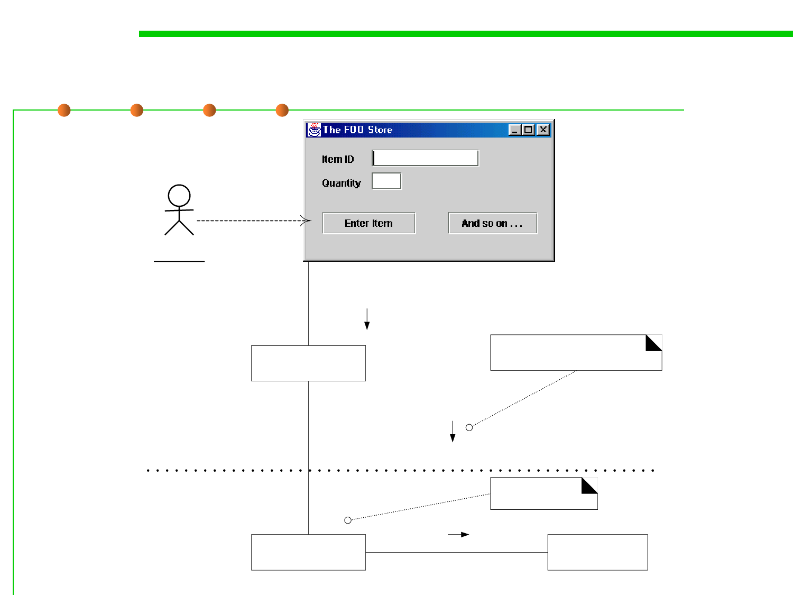
Facade Controller
6.1 Metrics and Construction Principles for Maintainability
presses button
: Cashier
actionPerformed( actionEvent )
UI Layer
:SaleJFrame
system operation message
1: enterItem(itemID, qty)?
Domain Layer
controller
:Register
1.1: makeLineItem(itemID, qty)
:Sale
6.1 Metrics and Construction Principles for Maintainability
System events and Allocating system operations
System Sequence Diagram
: Cashier
Process Sale Scenario
makeNewSale()
enterItem(itemID, quantity )
description, total
* [more items]
endSale()
total with taxes
makePay ment(amount)
change due, receipt
:Sy stem
System
endSale()
enterItem()
makeNewSale()
makePayment()
makeNewReturn()
enterReturnItem()
...
system operations
discovered during system
behavior analysis
System
endSale()
enterItem()
makeNewSale()
makePayment()
enterReturnItem()
makeNewReturn()
...
Register
...
endSale()
enterItem()
makeNewSale()
makePayment()
makeNewReturn()
enterReturnItem()
...
allocation of system
operations during design,
using one facade controller
在设计过程中使用一个
外观控制器分配系统操作
ProcessSale
Handler
...
endSale()
enterItem()
makeNewSale()
makePayment()
HandleReturns
Handler
...
enterReturnItem()
makeNewReturn()
...
allocation of system
operations during design,
using several use case
controllers
在设计过程中使用若干用例控
制器分配系统操作
6.1 Metrics and Construction Principles for Maintainability
(2) Information Expert
▪ Problem: What is a general principle of assigning responsibilities
to objects?
– Who should be responsible for knowing/doing …?
– Domain model (domain expert, domain analysis) to design model
(software classes).
– Any existing to any representative.
▪ Solution: Assign a responsibility to the information expert – the
class that has the information necessary to fulfill the
responsibility. 拥有信息的类负责相应的责任。
6.1 Metrics and Construction Principles for Maintainability
Example of Information Expert
▪ Who should be responsible for knowing the grand total of a sale ?
Sale
time
1
Contains
1..*
Sales
* LineItem
quantity
Described-by 1
Product
Description
description
price
itemID
1. 增加 getTotal()
t := getTotal()
: Sale
1 *: st := getSubtotal()
*
:SalesLineItem
:SalesLineItem
1.1: p := getPrice()
:Product
Specif ication
2. 增加 getSubtotal()
New method
Sale
date
time
getTotal()
SalesLineItem
quantity
getSubtotal()
Product
Specif ication
description
price
itemID
getPrice()
3. 增加 getPrice()

(3) Creator
6.1 Metrics and Construction Principles for Maintainability
▪ Problem :
– Who should be responsible for creating a new instance of some class ?
▪ Solution: Class B has the responsibility to create an instance of
class A if :
– B aggregates or “contains” A objects
– B closely uses A objects
– B has the initializing data for A
– B is a creator of A objects.

6.1 Metrics and Construction Principles for Maintainability
Example of Creator
▪ Who should be responsible for creating a SalesLineItem ?
Sale
time
1
Contains
1..*
Sales
* LineItem
quantity
Described-by 1
Product
Description
description
price
itemID
: Register
: Sale
makeLineItem(quantity )
create(quantity )
: SalesLineItem

(4) Low Coupling
6.1 Metrics and Construction Principles for Maintainability
▪ Problem :
– How to support low dependency, low change impact, and increased
reuse?
– Coupling is a measure of how strongly one element is connected to, has
knowledge of, or relies on other elements.
▪ Solution:
– Assign a responsibility so that coupling remains low.
– Low Coupling is an evaluative principle. Use this to evaluate alternatives.

6.1 Metrics and Construction Principles for Maintainability
Example of Low Coupling
▪ Who should be responsible for creating a Payment instance and
associate with a Sale ?
makePay ment()
: Register
1: create()
p : Pay ment
Register同Payment和Sale耦合 2: addPay ment(p)
:Sale
makePay ment()
: Register
Register仅同Sale耦合
1: makePay ment()
:Sale
1.1. create()
:Pay ment

6.1 Metrics and Construction Principles for Maintainability
(5) High Cohesion
▪ Problem :
– How to keep complexity manageable ?
– Cohesion is a measure of how strongly related and focused the
responsibilities of an element are.
▪ Solution:
– Assign a responsibility so that cohesion remains high.
– High Cohesion is an evaluative principle. Use this to evaluate alternatives.
6.1 Metrics and Construction Principles for Maintainability
Example of High Cohesion
▪ Who should be responsible for creating a Payment instance and
associate it with a Sale ?
Ex.1
: Register
: Sale
makePay ment()
create()
p : Pay ment
addPay ment( p )
High Cohesion pattern suggests ex. 2
Creator pattern suggests ex. 1
Ex.2
: Register
: Sale
makePay ment()
makePay ment()
create()
: Pay ment
(6) Indirection
6.1 Metrics and Construction Principles for Maintainability
▪ Problem:
– Where to assign a responsibility, to avoid direct coupling two (or more)
things? How to decouple objects so that low coupling is supported and
reuse potential remains higher? 如何降低耦合
▪ Solution:
– Assign the responsibility to an intermediate object to mediate between
other components or services so that they are not directly coupled. 将责任
分配给中间对象，以避免直接耦合
▪ The indirection pattern supports low coupling (and reuse
potential) between two elements by assigning the responsibility of
mediation between them to an intermediate object.
▪ An example of this is the introduction of a controller component
for mediation between data (model) and its representation (view)
in the model-view-controller pattern.

(6) Indirection
6.1 Metrics and Construction Principles for Maintainability
: Sale
:TaxMasterAdapter
t = getTotal
taxes = getTaxes( s )
...
TCP socket
communication
xxx
...
«actor»
:TaxMasterSystem
the adapter acts as a level of
indirection to external systems

6.1 Metrics and Construction Principles for Maintainability
(7) Polymorphism
▪ Problem:
– How handle alternatives based on type? How to create pluggable software
components?
▪ Solution:
– When related alternatives or behaviors vary by type(class), assign
responsibility for the behavoior using polymorphic operations to the types
for which the behavior varies.
▪ According to polymorphism principle, responsibility of defining
the variation of behaviors based on type is assigned to the type for
which this variation happens.
▪ This is achieved using polymorphic operations.
▪ The user of the type should use polymorphic operations instead of
explicit branching based on type.

6.1 Metrics and Construction Principles for Maintainability
(7) Polymorphism
«interface»
ITaxCalculatorAdapter
getTaxes( Sale ) : List<TaxLineItems>
TaxMasterAdapter
getTaxes( Sale ) : List<TaxLineItems>
GoodAsGoldTaxPro
Adapter
getTaxes( Sale ) : List<TaxLineItems>
<???>Adapter
...
...
By Polymorphism, multiple tax calculator adapters have their
own similar, but varying behavior for adapting to different
external tax calculators.
6.1 Metrics and Construction Principles for Maintainability
(8) Protected variations 防止变异
▪ Problem:
– How to design objects, subsystems, and systems so that the variations or
instability in these elements does not have an undesirable impact on other
elements? 使对象或系统的内部不稳定性不会对其他元素产生不良影响
▪ Solution：
– Identify points of predicted variation or instability; 确定将会发生的变化
– Assign responsibilities to create a stable interface around them 分配责任以
创建稳定的接口
▪ The protected variations pattern protects elements from the
variations on other elements (objects, systems, subsystems) by
wrapping the focus of instability with an interface and using
polymorphism to create various implementations of this interface.
6.1 Metrics and Construction Principles for Maintainability
(8) Protected variations 防止变异
«interface»
ITaxCalculatorAdapter
getTaxes( Sale ) : List<TaxLineItems>
TaxMasterAdapter
getTaxes( Sale ) : List<TaxLineItems>
GoodAsGoldTaxPro
Adapter
getTaxes( Sale ) : List<TaxLineItems>
<???>Adapter
...
...
By Polymorphism, multiple tax calculator adapters have their
own similar, but varying behavior for adapting to different
external tax calculators.

6.1 Metrics and Construction Principles for Maintainability
(9) Pure fabrication 纯虚构
▪ Problem:
– What object should have the responsibility, when you do not want to
violate High Cohesion and Low Coupling, or other goals, but solutions
offered by Expert(for example) are not appropriate？无法依靠专家模式实
现高内聚和低耦合时
▪ Solution:
– Assign a highly cohesive set of responsibilities to an artificial or
convenience class that does not represent a problem domain concept
something made up, to support high cohesion, low coupling, and reuse. 设
计虚构的类实现高内聚低耦合和复用
▪ A pure fabrication is a class that does not represent a concept in the
problem domain, specially made up to achieve low coupling, high
cohesion, and the reuse potential thereof derived (when a solution
presented by the information expert pattern does not).
▪ This kind of class is called a "service" in domain-driven design.
6.1 Metrics and Construction Principles for Maintainability
(9) Pure fabrication 纯虚构


Software Construction
Summary


Software Construction
The end
April 14, 2019